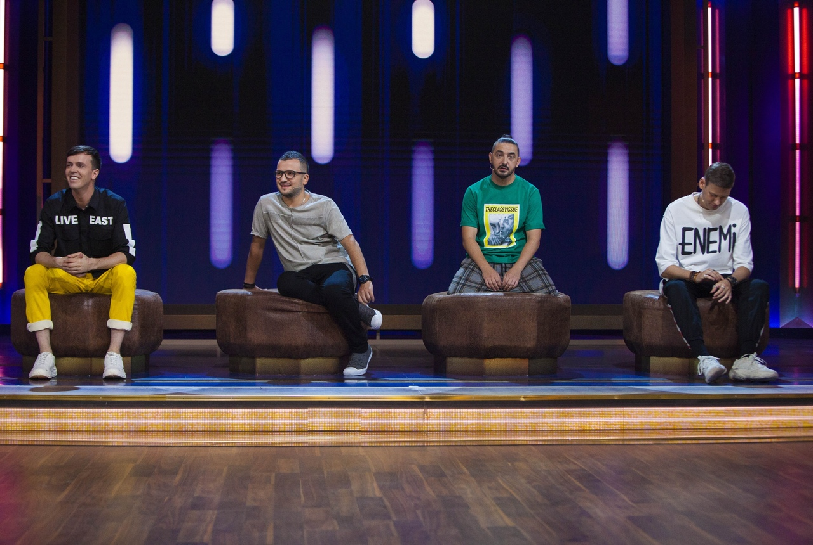

Шоу "Импровизация"
«Импровизация» — российское еженедельное телевизионное шоу производства компании Comedy Club Production, выходящее на телеканале ТНТ с 5 февраля 2016 года.
Проект построен на импровизационных играх, которые артисты разыгрывают без подготовки, основываясь только на тех данных, которые они получают от ведущего или гостей программы
Формат
В каждом выпуске принимают участие 4 актёра-импровизатора, ведущий и приглашённая звезда (или звёзды). Ведущий находится слева за столом большой сценической площадки, приглашённая звезда (звёзды) сидит рядом с ним. Актёры находятся в задней части сцены на пуфах и выходят на сцену только во время импровизаций. Исполнители, которые не участвуют в игре, остаются на своих местах. Также на сцене есть специально спрятанные декорации, которые появляются в момент некоторых импровизаций.
Главное отличие «Импровизации» от подобных передач — отсутствие сценария. В других телепрограммах номера и шутки сначала придумываются, редактируются, репетируются, снова редактируются и только потом снимаются. Актёры заранее не знают, что или кого им придётся сыграть. Единственный сценарий, который существует — это правила игр и задания для импровизаций, которые придумывает авторская группа проекта.
Каждая серия состоит из 6—7 импровизационных игр, где большую часть выпуска в импровизациях принимают участие приглашённые звёзды.
В импровизациях принимает участие разное количество актёров: от двух до всех четверых.
В конце каждого выпуска ведущий и актёры прощаются со зрителями в импровизационных образах, заданных ведущим.